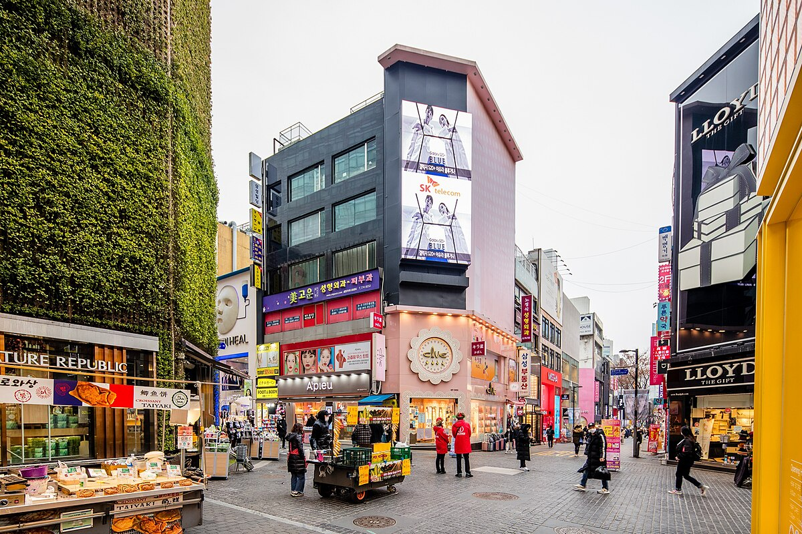
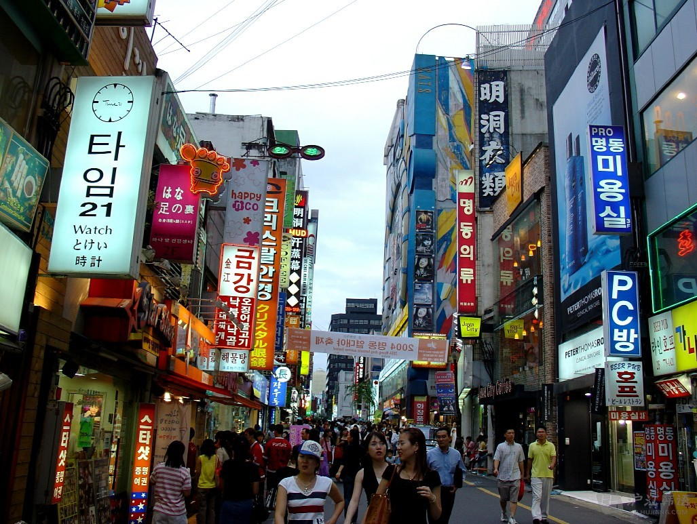
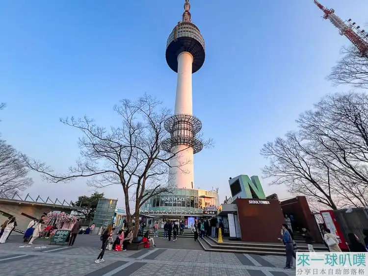
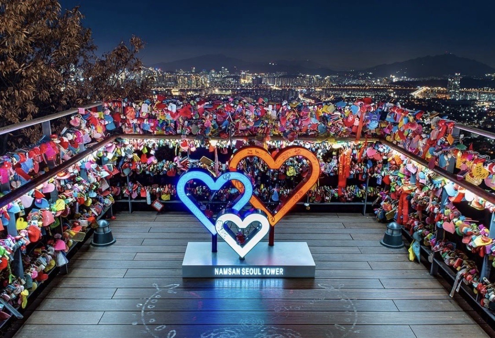

南韓 | 首爾 | 2024 3日購物樂園

航空交通
香港至首爾的航線是東亞最繁忙的國際航線之一，每天有多班直航航班， 主要由 國泰航空、香港快運、韓國航空、以及韓亞航空 等公司營運。 航程約 4小時，通常由香港國際機場出發，抵達首爾仁川國際機場。 仁川機場是韓國最大的航空樞紐，設施完善，並與市區有便捷的交通連接， 包括機場快線列車與巴士。
票價方面，經濟艙單程票最低可在 HK$1,100 左右找到。由於航班頻繁， 旅客可靈活安排早晨或晚間出發，方便規劃短途旅行或週末假期。 仁川機場本身也是旅遊體驗的一部分，擁有購物中心、文化展覽與美食街， 讓旅程在抵達前就充滿期待。
房間住宿
首爾作為韓國的首都與旅遊中心，住宿選擇極為多元，能滿足不同旅人的需求。 市中心如明洞、弘大與江南一帶，聚集了各式酒店、旅館與民宿。 若追求便利與購物氛圍，明洞的酒店房間通常設計現代，提供免費Wi-Fi與早餐， 適合短途旅行者。弘大則以青春活力著稱，周邊有許多青年旅舍與特色民宿， 房間裝潢常融入藝術元素，價格親民，並鼓勵旅人交流。
此外，首爾的住宿也逐漸融入智慧科技與環保理念， 部分酒店提供手機控制燈光與溫度的智慧房間，並採用環保材料。 無論是背包客、家庭旅遊或商務出差，首爾的房間住宿都能提供合適的選擇， 讓旅程更加舒適難忘。
歷史與文化
首爾的歷史源遠流長，早在新石器時代便有人類居住於漢江流域。 公元前18年，百濟王國在此建立都城，奠定了首爾作為政治與文化中心的地位。 隨後在高麗與朝鮮王朝時期，首爾（當時稱為漢城）成為王朝首都， 並建造了景福宮、昌德宮等宏偉宮殿，象徵著王權與儒家文化的繁盛。
近代歷史中，首爾經歷了日本殖民統治與韓戰的破壞，但在戰後迅速復興， 逐漸發展為現代化大都市。今日的首爾不僅是韓國的政治與經濟中心， 更是文化交流的舞台。傳統韓屋村、佛教寺廟與市場依舊保存著古老風貌， 而同時，K-pop、韓劇與時尚潮流則展現了首爾的現代文化力量
這座城市的獨特之處在於 古今交融：遊客既能在北村韓屋村感受傳統生活氛圍， 也能在江南體驗尖端科技與流行文化。首爾的歷史與文化正如漢江般流淌， 既承載過去的記憶，也奔向未來的創新。
必訪景點
-
🏯 景福宮
景福宮是朝鮮王朝的正宮，建於 1395 年，象徵王權與儒家文化。 宮殿群宏偉壯麗，包含勤政殿、慶會樓等代表性建築。 遊客可觀賞守門將交替儀式，體驗古代宮廷氛圍。春季櫻花、秋季楓葉更添美景， 是了解韓國歷史的最佳起點。
-
🛍️ 明洞
明洞是首爾最繁華的購物區之一，聚集時尚品牌、化妝品店與街頭美食。 白天人潮洶湧，夜晚燈火通明，氛圍熱鬧。這裡不僅是購物天堂， 也是品嚐韓式小吃如辣炒年糕、烤魷魚的好地方。對喜愛購物與美食的旅人而言， 明洞是必訪之地。


-
🌆 南山首爾塔
位於南山山頂的首爾塔是城市地標，觀景台能俯瞰首爾全景。 夜晚燈光璀璨，浪漫氛圍吸引情侶前來掛上「愛情鎖」。 內設有餐廳與展覽，結合娛樂與觀光。白天可登山健行， 夜晚則欣賞壯麗夜景，是體驗首爾浪漫的首選。

